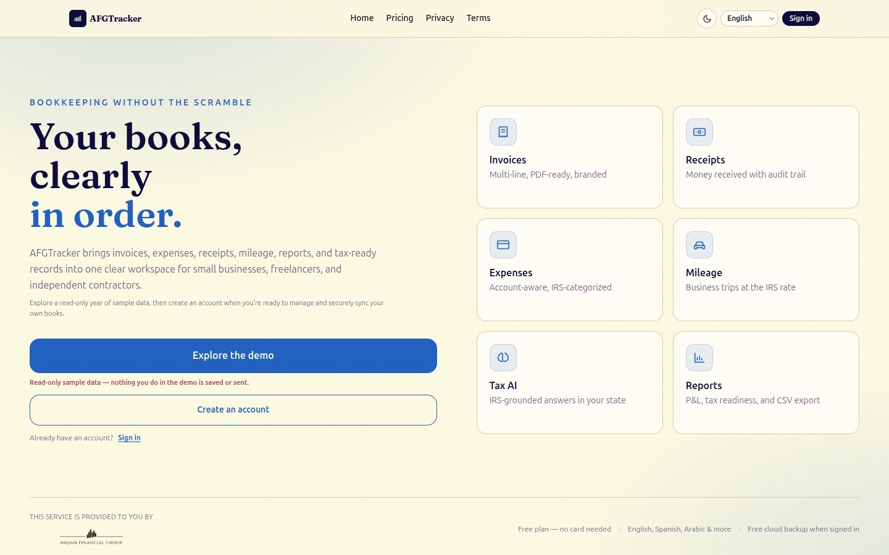

● STATUS: LIVE IN PRODUCTION
AFGTracker — bookkeeping & tax-readiness platform
Designed, built, and shipped a full-stack web app: invoices, receipts, expenses, mileage, OCR receipt capture, reports, and accountant-ready exports. Multi-tenant with database row-level security, authentication, payments, and automated tests. It runs live and serves real users today.
Next.jsReactTypeScriptPostgres / RLSClerk authStripeCI & tests

// source private (commercial product) — full architecture & code walkthrough available on request
◇ HANDS-ON · SECURITY OPERATIONS
Home SOC + SIEM Lab
A multi-VM Proxmox environment with network segmentation and Windows / Linux / Active Directory hardening. ELK/Splunk stack with Filebeat & Winlogbeat forwarding, custom dashboards, and MITRE ATT&CK-mapped detection rules for SSH brute-force and suspicious PowerShell — with traffic analysis in Wireshark and service discovery via Nmap, documented as repeatable investigations.
ProxmoxELK / SplunkWinlogbeatActive DirectoryMITRE ATT&CKWiresharkNmapSigma
// built & operated hands-on — architecture, detection logic, and findings walkthrough available on request
▲ TRAINING · TOP 4.7% GLOBALLY
TryHackMe — SOC Analyst Level 1
Completed 40+ hands-on rooms across SIEM, EDR, digital forensics, incident response, phishing analysis, IOC extraction, severity rating, threat hunting, and network traffic analysis.